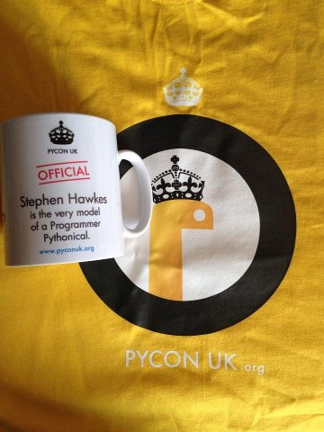
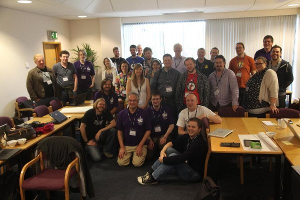
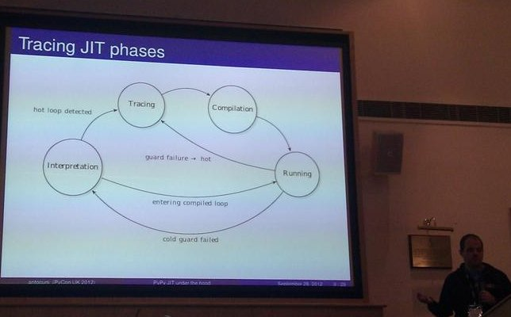

PyconUK 2012
It was PyconUK 2012 over the final weekend of September.
PyconUK is a community organised conference focussed on the Python programming language for UK based developers and other interested parties. This year I was both an attendee and organiser and this post is a review of my personal highlights.
Actually, I'd like to start by explaining the work that's required to organise a conference such as PyconUK. First, PyconUK has a great reputation: it is great value for money (£100 a ticket if you booked as an early bird), packed full of excellent talks and has a very friendly atmosphere. This is due to the "tone" set by the originators of the conference back when it first started five or six years ago. Happily many of the original team are still involved and it has been an education watching what and how they organise things.
Since this is a community organised conference all organisers are volunteers. Most of our interaction was via weekly IRC meetings, although sometimes we'd find a pub in a vaguely central location (we're all based in the Midlands) and conduct business over a friendly pint. In either case, meetings were business like, tended to be waffle free and always ended in clearly defined and delegated tasks. There's no room for fanny-annying around when organising PyconUK!
I was principally involved in three tasks:
- The diversity and code of conduct statement
- The conference song (!)
- The education track (see below).
It is a sad fact that having a diversity statement and/or code of conduct for a free software conference is becoming the norm. One would hope that attendees at free software conferences (whose communities value openness, merit and collaboration) would understand that sexism, racism and all other forms of prejudicial behaviours are completely unacceptable. Unfortunately, recent and very public cases at other free software related conferences have shown that some people are clueless idiots. It is through their moronic actions that our communities are brought into disrepute (happily, to my knowledge, PyconUK has never had to deal with such misdemeanours). We acknowledged the need for such a statement: it would clearly state the expectations of the wider Python community within the UK and give us, the organisers, a set of options for dealing with potential idiots. However, we strongly felt that we didn't want to follow the example of some other conferences with a list of condescending rules that curtailed freedom of expression in all its glorious manifestations. These are complex issues that a mere set of rules would simply aggravate. I contacted a couple of other "Pycons" (our Italian friends at Europython and antipodean cousins at PyconAu) for advice and drafted something that attempted to walk the fine line between expectation and curtailment. After feedback from both the other PyconUK organisers and the wider Python community in the UK, it was adopted. In case you're interested, it's released under a creative commons license and is available here. Feedback is always most welcome.
I never imagined I'd be writing, arranging and recording a conference song, but, thanks to fellow organiser, design guru and "bloke in charge of publicity" Steve Hawkes, it was decided that one was needed. Given that I have a musical background I was drafted in to help. Steve's idea was to do a version of the elements song but for all the Python language's keywords. This is a classic "patter" song and is itself based upon the famous Major General's Song from Gilbert and Sullivan's comic opera The Pirates of Penzance. It also fitted quite nicely with the "Victorian" snakes vibe that Steve was using in his designs - Gilbert and Sullivan are very much a Victorian phenomenon. A couple of Skype calls and various emails later we had the words sorted out. We attempted to engage the services of a "proper singer" but in the end it fell to me to sing the damn thing (and many thanks to my mate, Darren Goldsmith, who acted as sound engineer and producer). You can find the results at this GitHub repository. Please feel free to suggest new lines and verses via pull requests! At some point in the not-too-distant future we hope to record a group of Pythonistas singing the chorus (watch out London Python Code Dojo). We were hoping to do this at the conference itself but lack of time and the fact that I lost my voice meant we were unable to fulfil this desire.
In any case, Steve caught the G&S vibe and produced some quite brilliant t-shirts and personalised mugs quoting lines from the song (see the example on the right). I really can't wait to see what he comes up with for next year's conference. I suspect finding a strong UK based theme is an essential element. We did "The Blitz" last year, Victorians this year and I'm starting to worry we're turning into something akin to a Blackadder version of British history given the choices we've been making. ;-)
How about a bonnets and blouses Jane Austen theme or perhaps something Elizabethan? Maybe we could go more modern and adopt the swinging sixties as a touchstone (Austin Powers..?) or Punk?
It remains to be seen what Steve's thoughts on the matter are...
Given the interest in RaspberryPi (apparently so called because it runs a programming language called "Python" - just fancy that?) and the teaching of programming in schools (see my blog posts here and here) it was suggested that "education" would be a good theme. As I used to be a teacher I stepped up to bring my colleagues past and present together in an "education" track.
We, the Python community, have been presented with an opportunity: the resurgence of interest in the teaching of programming to children has caused a lot of people to look to Python. Many teachers of ICT (that'd be Information and Communication Technology) don't have any programming experience and the thought of teaching such a weird, abstract and potentially complex activity to a room of thirty kids of mixed ability is likely to fill them with horror. The question of what should be taught is also moot (hence the interest in Python). I personally think the promotion and practice of "computational thinking" facilitated via a language such as Python (but done in as language neutral way as possible) is the way to go. Obviously (and I'm being very cynical here), incumbent interests in educational ICT and companies within the IT industry will be interested in promoting their platform as the mechanism to "teach the kids to code" (whatever that may mean).
At PyconUK we simply wanted to find out how best to meet the needs of teachers and show them what it's like to be a part of a free software community with all that entails: collaboration, debate, openness, meritocracy, sharing of resources and learning from the examples of others.
So our aim was simple: if you bring two diverse groups of intelligent and motivated people together interesting things are bound to happen. It turns out we were correct! I'm especially grateful to Alan O'Donohoe for helping me get the word out (most of the teachers I know are music, rather than ICT, teachers) and Alan has quite a cult status among those "in the know" about all things ICT. This culminated in a Google hangout where I was given the opportunity to promote our event to anyone who happened to drop by:
It turns out that quite a number of teachers were interested but getting them to come along was quite hard - the current squeeze on school budgets and indifference of management being the two primary causes. Nevertheless, we almost had a whole cohort of 30 trainee ICT teachers turn up but, alas, funding nipped that in the bud.
In the end we had about ten teachers in total turn up over the weekend and an abundance of developers who wanted to dive in and help. On the Saturday morning was an "Introducing Python" workshop that John Pinner and I ran and there were also a handful of talks on several education related projects over the duration of the conference (for example, Mike Sandford's talk about the turtle module).
Sunday morning was perhaps the highlight of the weekend for me as both teachers and developers rolled up their collective sleeves and took part in an "education sprint" (a sprint, in the context of a free software conference, is an intense period of work and collaboration on a specific and clearly defined project). Here's a group shot of the participants:
We were very lucky to have Carrie Anne Philbin (well known for her infectious enthusiasm and excellent blog, ICT with Miss P) who stepped up to run a post-it note led session for discovering attendee's interests. It was a case of worlds colliding. I don't think any of the developers were aware of the conditions that teachers have to deal with: troll like network administrators with no interest in helping to promote learning, locked down laptops that are unusable unless you want to use Word, out-of-date versions of software that put teachers in the technological stone-age (Internet Explorer 6!) and all this in addition to the burden of teaching, marking, planning, social work, behaviour management, OFSTED inspections and extra-curricular clubs, groups and activities that form the day to day activities of a teacher.
Once the developers had picked their collective jaws up from the floor, we agreed to split in to mixed groups of teachers and developers with a view to quickly drafting outlines of schemes of work, lesson plans and other educational resources (I spent an enjoyable hour creating a draft for a scheme of work about text based adventure games). At the end we came together for a show-and-tell feedback session. The results of the morning can be found in this github repository.
A welcome addition to our ranks was PSF chairperson Van Lindberg who made significant contributions to the discussion about adventure games as a vehicle for learning. Great stuff! In addition, during the Saturday evening PSF member's meeting Carrie Anne somehow smuggled herself in resulting in much of the ensuing conversation to be centred around how the PSF could help teachers use Python (nice one Miss P!). Happily, it looks like an education portal will become part of the scope for the redesign of the python.org website and hopefully Carrie-Anne, Alan and teaching colleagues around the world will have a chance to shape its development.
Actually, there is an education summit at Pycon in California in March and it would be wonderful if both Carrie-Anne and Alan could be the recipients of grants so they can attend. One thing that frustrates me about the world of education is the lack of global coordination: teachers all over the world duplicate, rather than share, each other's efforts. No matter the local education system, surely an international community such as Python can bring teachers together to promote the creative fun that is programming? If we don't, there's a danger that there won't be a Pycon left in twenty five year's time. After all, when you have teachers as enthusiastic as Carrie Anne (see her video response to PyconUK below) and Alan we'd be fools not to support them in their efforts to help the next generation of hackers discover their programming chops.
If you are a teacher or developer interested in collaborating on Python as a vehicle for learning then you should join Carrie Anne's Python EDU mailing list or get in touch with the Python in Education Special Interest Group.
Finally, there was the rest of the conference: the lightning talks (video here) were as funny as ever with Dan Pope's talk on his gaming creations bringing the house down (at around the 31 minute mark). I had a lot of fun parping on my Tuba with Ben Croston (who has the excellent job of brewing beer in a brewery that's automated by Python). You can hear us at around the 1h:17m mark. It was great to catch up with so many old friends in the pub or at the impromptu curry outing (I'm sure I overheard, "can we have a table for 22 please?") and, of course, there were the talks. I think my favourite slide of the conference is this one from Antonio Cuni who seems to be channelling Teenage Mutant Ninja Turtles in this graph explaining the phases of a tracing JIT compiler:
I'm already looking forward to next year (just you wait to see what we have planned).
:-)